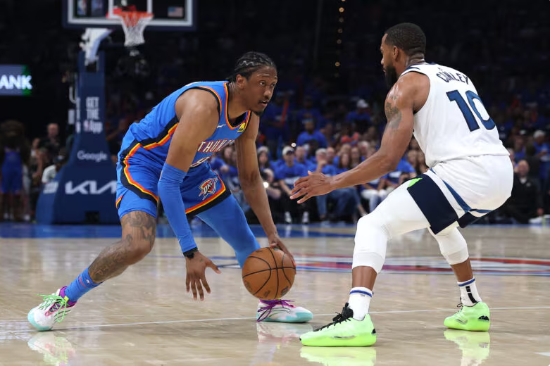
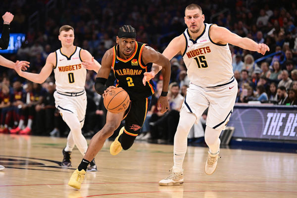

NBA Fantasy Focus: Jalen Williams é a faísca do OKC
Analisando as perspectivas de fantasia para 2025-26 do ala-armador do Thunder, Jalen Williams, após suas grandes atuações nos playoffs.
O Thunder conquistou uma liderança expressiva de 3 a 1 nas finais da Conferência Oeste com uma vitória sobre o Timberwolves em Minnesota no Jogo 4. Shai Gilgeous-Alexander mostrou por que foi recentemente coroado MVP, terminando com 40 pontos, nove rebotes e 10 assistências em 40 minutos. Seu principal companheiro de equipe no jogo foi Jalen Williams , que marcou 34 pontos, três rebotes, cinco assistências, três roubos de bola e seis cestas de três pontos em 39 minutos.
Jogo da temporada regular de 2024-25
Williams vem da melhor temporada de sua carreira, com médias de 21,6 pontos, 5,3 rebotes, 5,1 assistências, 1,6 roubos de bola e 1,8 cestas de três pontos por jogo. Sua eficiência caiu um pouco em comparação com suas duas primeiras temporadas na liga, mas ele não teve dificuldades, com aproveitamento de 48,4% nos arremessos de quadra e 78,9% nos lances livres. Williams também jogou em 69 partidas. Ele participou de pelo menos esse número de partidas em cada uma de suas três primeiras temporadas na liga.
Embora Gilgeous-Alexander seja o líder indiscutível do Thunder, Williams tem visto seu papel crescer continuamente. Após registrar uma taxa de aproveitamento de 18,4% durante sua temporada de estreia, ele teve uma taxa de aproveitamento de 23,7% em 2023-24. Nesta temporada, sua taxa de aproveitamento aumentou para 27,5%. Ele também teve uma média de 4,9 tentativas de 3 pontos por jogo, um aumento em relação às 3,4 tentativas por jogo na temporada passada. Isso provavelmente prejudicou sua eficiência geral, mas ele ajudou a equilibrar isso com seu aumento nas cestas de 3 pontos.
Com o Thunder eliminando tantos times, Williams teve uma média de apenas 32 minutos por jogo durante a temporada regular. Durante os playoffs, ele teve uma média de 35 minutos por jogo. No entanto, esse aumento no tempo de jogo não resultou em um aumento drástico na produção. Em 15 jogos de playoffs, ele teve médias de 20,5 pontos, 5,6 rebotes, 5,3 assistências, 1,7 roubos de bola e 1,7 cestas de três pontos. Enfrentando defesas melhores, ele acertou 45,5% dos arremessos de quadra e 32,1% dos arremessos de três pontos.